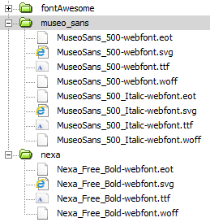
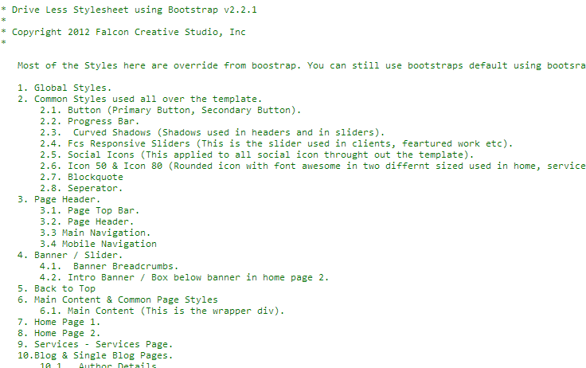

DRIVE THEME
ILLUSTRATION
on Illustration
E: info@yoursite.com T: + (009) 123 4567
Created : Dec 6 2012
By: Falcon Creative Studio
Thank you for purchasing our theme. If you have any questions that are beyond the scope of this help file, please feel free to email via user page contact form here. Thank You so much and Please Rate this Template.
We used three Webfont from Font Spring. All three web fonts are free, but not allowed distributed commercially. Please download it from below link and choose below mentioned fonts only. Others are costly and not used in this template.
Nexa Bold (Used in headings):
http://www.fontspring.com/fonts/fontfabric/nexa
Museo Sans 500 & Museo Sans 500 Italic (Used in body texts):
http://www.fontspring.com/fonts/exljbris/museo-sans
After you downloaded and unzip the template. Open Template folder and open fonts. We already create two folders (museo_sans and nexa). You have to download the fonts from above link and extract both fonts in respective folders. Check image below, you will understand. (Note: Both Museo Sans 500 & Museo Sans 500 Italic goes inside museo_sans folder).
Drive have lots of features. Some of them are listed below.
Drive come 20 different color scheme. All colors styles css files are in color-css folder. To change the theme color first pick a color from color css name in below section or from our demo site. And search for below code in <head> tag and replace default.css with the color you pick (eg: surfie-green.css) in all pages. We also include less folder. If you know how to use less then open less folder and open variables.less. Adjust color variables and compile color.less and style.less files to get your own color.
Drive comes with 15 different pages as follows.
CSS Files are Well Commented. You can easily find and edit the rules. But in our demo site, we used compress version to load quickly. A part of its screenshot below.

orange (default): #ed5f30
(default.css)
Blue Bell :
#8D95C3
(blue-bell.css)
Blumine Blue : #1C4A72
(blumine-blue.css)
Boston Blue : #3d82b1
(boston-blue.css)
San Marino Blue : #426195
(marino-blue.css)
Tapestry (pink) : #b15596
(tapestry-pink.css)
Viola :
#CF87C1
(viola.css)
Crimson red : #D61646
(crimson-red.css)
Persian Red : #CC3333
(persian-red.css)
Copper Brown: #B07838
(copper-brown.css)
Surfie Green: #118D78
(surfie-green.css)
Viridian Green: #3B8F64
(viridian-green.css)
Forest Green: #397028
(forest-green.css)
Highland Green: #679367
(highland-green.css)
Deluge(voilet): #8062B1
(deluge-voilet.css)
Comet blue: #555682
(comet-blue.css)
Flame Pea:
#E06338
(flame-pea-orange .css)
Jelly Bean magenta: #28778e
(jelly-bean-magenta.css)
Well Read(choco): #B1353C
(well-read-choco.css)
Havelock
Blue:
#468ACE
(havelock-blue.css)
Lavender
Purple:
#9D8CBA
(lavender-purple.css)
<body>
.......
.......
.......
.......
.......
.......
.......
.......
.......
.......
.......
.......
</body>
Drive is fully responsive template which mean it can scale from large monitor to small screen devices (1200px to 320px). May be some of you doesn't want reponsive then you can easily disable the responsive layout by simply deleting following code which is present in <head> tag.
Some of you still may like to use 960gs or 940px centered layout in your site. In that case you can simple disable large monitor reponsive only. Its is very simple. Open responsive.css, search below css code and then delete that code block or add css comments (/* */) to disable it.
/****
Delete this code Block or Comment it to disable Large Monitor Responsive
****/
@media (min-width: 1200px) {
.............
.............
.............
}
It is complicated of the template. You don't have change any js or css. Just replace the image. We used 2 sliders.
1.Sequence Slider (Used in home page).
2.FCS Slider (Using in most of the places)
Sequence is the jQuery slider plugin with infinite style. It provides the complete functionality for a website slider without forcing you to use a set theme. In fact, Sequence has no in-built theme, leaving you complete creative control to build a unique slider using only CSS3 -- no jQuery knowledge required! Check this link for more details and learn more about to set your own animation
If you don't know how it works or how to edit, then simply replace images (in img/banners/) with the same size (and if your new images names are different, then change the image name correctly in home pages. After Changed images don't forget update preloader script in footer.
var options = {
autoPlay: true,
nextButton: true,
prevButton: true,
animateStartingFrameIn: true,
autoPlayDelay: 3000,
transitionThreshold: 500,
preloader: true,
preloadTheseFrames: [1],
/* Update first li images name & loacation here otherwise slider may not work. */
preloadTheseImages: [
"img/banners/slide1.png",
"img/banners/slide1-bg.png"
]
};
Fcs slider is a jQuery Slider developed by Falcon Creative Stduio (FCS) especially for this template, you will not find this plugin anywhere in internet. This is a responsive slider and it slide images one by one (its also supports swipe) which is used in our clients, our team, featured works, other projects sections and so on.
How to use this slider? Adding this slider is pretty simple.
...
...
We created this template using less files. All the less files are in less folder. You don't have upload this in server. Styles.less is file contain all template styles and color.less is the files contains color styles. We also includes all the boostrap less files as well, so you update it easily yourself. To change color you have to edit variable.less and you have to adjust the three variable (@baseColor, @baseColorRGBA , @formFocusColor) to create your own color scheme.
/****
You can add font awesome for any element. You can change color & adjust font size to increase or decrease icon size.
****/
icon-camera-retro
icon-fire
icon-fire
icon-fire
For icon with rounded background like in services pages, you have apply class icon50 (50px width & height) or icon80 (80px width & height) to a block level element like p tag. For color background add orange class with icon50 or icon80. Inside icon80 or icon50 you have use inline level element like <span> or <i> with font awesome icon class. For left alignment using left or right class with icon50 or icon80. Default is center.
You can do lot more with Font Awesome. We this same method for icon through out the template (excerpt social icons)
You have to edit style.css to edit the logo. First upload or save your logo inside img folder. Then open style.css from css folder. Search for below code and adjust the value as per instruction below.
/* Search for #pageHeader #logo a then you will find below code*/
#pageHeader #logo a{
font-family: "nexa_500", Tahoma, Geneva, sans-serif;
font-size: 36px;
color: #333333;
text-decoration: none;
background: url(../img/logo.png) no-repeat center center; /* change logo.png name to your logo image name if its different */
width: 120px; /* change your logo width */
height: 53px; /* change your logo height */
display: inline-block;
text-indent: -1000em; /* if you doesn't have logo then delete this and background: rules. Then your site name will display instood of image */
}
Navigation Structure
To update you twitter feed, search for below code above </body> Tag and replace your_twitter_username by your twitter username.
Portfolio Structure as follows:
Open Contact Page. You will see your@emailaddress.com in line 2. Please change it to your email address
$yourEmailAddress = 'your@emailaddress.com'; //Put your own email address here instead of your@emailaddress.com
Creating or adding a button is really simple. First create normal link with <a> Tag and class btn and respective button class. Examples as follows.
Button Primary
Button Secondary
You have to add some class to make default button to large or small. For large button add btn-large class and for small button add btn-small class. You can use these classes to any buttons
You can easily add icons to the button using font awesome. You have simply add font awesome icon class in <i> inside button. Check the example below:
We added three hover effects. For all these three has similar html structure. Only you have to change change class name (which is hover-effect1 or hover-effect2 or hover-effects3) to change hover effects.
on Illustration
DRIVE THEME
ILLUSTRATION
on Illustration
on Illustration
DRIVE THEME
ILLUSTRATION
on Illustration
on Illustration
DRIVE THEME
ILLUSTRATION
on Illustration
We designed and coded unique style progress bar and we also keep bootstraps default progress bars.
Theme Progress bars
Web Design - 60%
Default Bootstrap Progress bars
Web Design - 80%
Web Design - 40%
Theme Progress bars
Web Design - 60%
Default Bootstrap Progress bars
Web Design - 80%
Web Design - 40%
Special thanks below peoples who allow used their images in demo site.
Once again, thank you so much for purchasing this theme. As I said at the beginning, I'd be glad to help you if you have any questions about this theme. No guarantees, but I'll do my best to assist. If you have a more general question about the themes on ThemeForest, you might consider visiting the forums and asking your question in the "Item Discussion" section.
Please sure your toughts suggestion with us using this contact page. If like to add more feature, feel free to contact us. We will try to do it for you thanks.